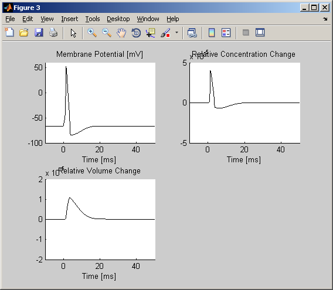

This is the readme for the model associated with the paper: Lee J, Boas DA, Kim SJ (2011) Multiphysics neuron model for cellular volume dynamics. IEEE Trans Biomed Eng 58:3000-3 These files were contributed by Jonghwan Lee. Usage: Extract the archive. To run the model with default parameters cd to the newly extracted folder in the Matlab command prompt (or octave) and type: LeeModel; It generates a few figures for example the plots for Figure 2C in the paper are displayed:  For more usage information see the documentation at the top of the LeeModel.m script.